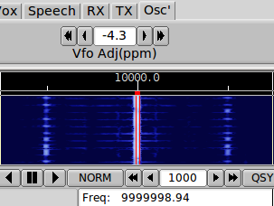

- Select the Analysis mode in fldigi
- Set the waterfall to the x4 scale
- Set kcat for USB, 2700 Hz bandwidth
- Set the frequency to the WWV frequency less 1000 Hz, ie: 9999.000 kHz
- Adjust the Vfo Adj control to zero beat the 1000 Hz detected WWV carrier.
As you adjust the control the carrier will move with respect to the ideal.
|

|